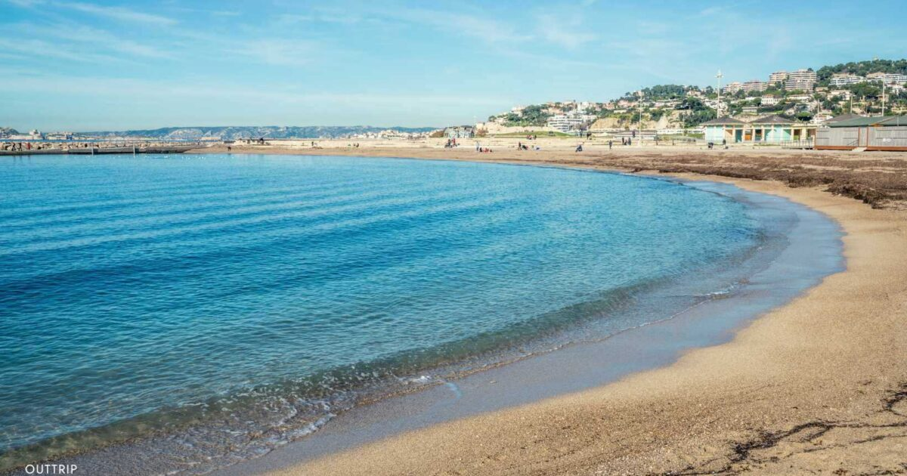

Sable et galais
Plage du Prado
La Plage du Prado est l'une des plages les plus populaires de Marseille. Elle offre une vue magnifique sur la mer Méditerranée et est idéale pour se détendre au soleil.
Activités
- Baignade
- Beach-volley
- Promenade en bord de mer
Commodités
- Restaurants
- Toilettes
- Poste de secours
Plage Borely
La Plage de Borely à Marseille, un havre de détente en bord de mer avec son sable doré, ses eaux cristallines. Profitez du soleil, de la baignade rafraîchissante, et des activités variées.

Activités
- Baignade
- Paddle
- Beach-volley
Commodités
- Restaurants
- ouches
- Location de parasols
Plage de l'Huveaune
La Plage de l'Huveaune offre un cadre paisible le long de la Méditerranée. Elle invite à la détente et aux loisirs au cœur de la nature méditerranéenne.
Activités
- Baignade et Natation
- Beach Volley
- Balade Côtière
Commodités
- Douches et Vestiaires
- Aires de Pique-nique
- Poste de Secours
Plage du Prophète
La plage du Prophète est bordée par les eaux cristallines de la Méditerranée, offrant un cadre idyllique pour se détendre sous le soleil de Marseille.

Activités
- Plongée sous-marine
- Paddle Board
- Yoga sur la plage
Commodités
- Restaurantsi
- Douches et vestiaires
- Poste de secours
Plage des Catalans
La plage des Catalans est bordée par des restaurants et des cafés, elle combine le plaisir de la baignade avec l'animation méditerranéenne.

Activités
- Baignade et Bronzage
- Sports nautiques
- Promenade le long de la Corniche
Commodités
- Douches et Vestiaires
- Restaurants et Cafés
- Location d'Équipement Nautique
Plage de Bonneveine
La Plage de Bonneveine offre une vue pittoresque sur la mer. Elle constitue l'endroit idéal pour se détendre au soleil et profiter d'une journée en bord de mer.

Activités
- Beach Volley
- Pique-nique sur la plage
- Observation du coucher de soleil
Commodités
- Location d'Équipement Nautique
- Espaces de Pique-nique
- Wi-Fi Gratuit